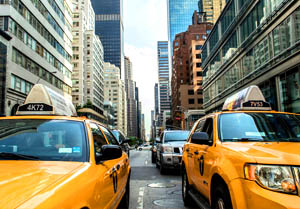

PRICE LIST
| 06am until 10pm | 10pm until 06am | ||
| taking taxi load | 2.40 € | 4.40 € | Réserver online |
| RATE 1 | 1.80 € | 1.80 € | Réserver online |
| RATE 2 | 2.70 € | 2.70 € | Réserver online |
| ONE HOUR WAIT | 30 € | 30 € | Réserver online |
| CHARGE | 0 € | 0 € | Réserver online |
RATE TRANSPARENT AND PREDICTABLE
The fare is variable, but its composition is uniform. Four factors identified by the Region of Brussels-Capital come into play:
the price of care that ensures a baseline performance also for extremely short distances and is currently set at € 2.40 per Region in Brussels.
kilometer price that calculates a cost function of the distance traveled. In Brussels, there is currently € 1.70 per km for journeys within the region (I rate) and € 2.70 per km for part of the journey located outside the region (Price II);
price expectation implies a cost per minute when the taxi is stopped at traffic lights or in traffic, when a taxi to Brussels runs at less than 20 km / h speed, the price per kilometer is longer apply and the meter automatically switches to standby rate is 0.5 € per minute;
the night rate which calculates a taxi performed between 22 pm and 6 am costs 2 € more than day.
Neither the driver nor the passenger can not calculate or manually control the fare. A taxi meter is registered necessarily present in the vehicle. Arrived at its destination, the traveler receives a ticket with which it can check if the data path is correct.
RATE TRANSPARENT AND PREDICTABLE
The fare is variable, but its composition is uniform. Four factors identified by the Region of Brussels-Capital come into play:
the price of care that ensures a baseline performance also for extremely short distances and is currently set at € 2.40 per Region in Brussels.
kilometer price that calculates a cost function of the distance traveled. In Brussels, there is currently € 1.70 per km for journeys within the region (I rate) and € 2.70 per km for part of the journey located outside the region (Price II);
price expectation implies a cost per minute when the taxi is stopped at traffic lights or in traffic, when a taxi to Brussels runs at less than 20 km / h speed, the price per kilometer is longer apply and the meter automatically switches to standby rate is 0.5 € per minute;
the night rate which calculates a taxi performed between 22 pm and 6 am costs 2 € more than day.
Neither the driver nor the passenger can not calculate or manually control the fare. A taxi meter is registered necessarily present in the vehicle. Arrived at its destination, the traveler receives a ticket with which it can check if the data path is correct.
Réserver online